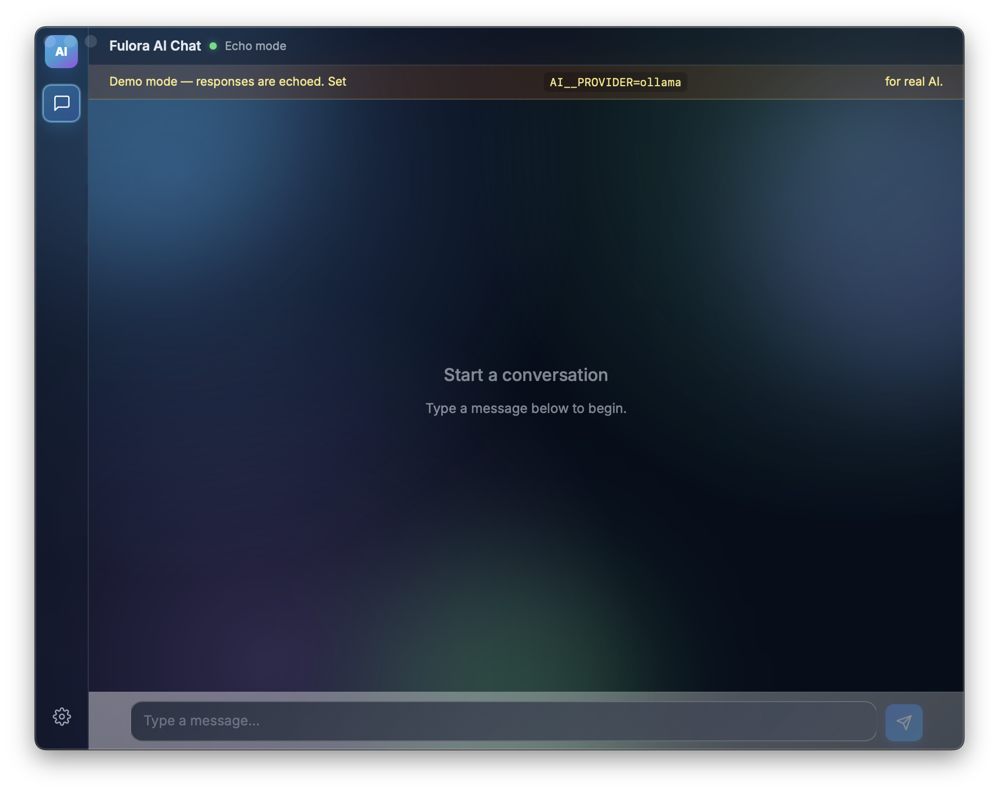
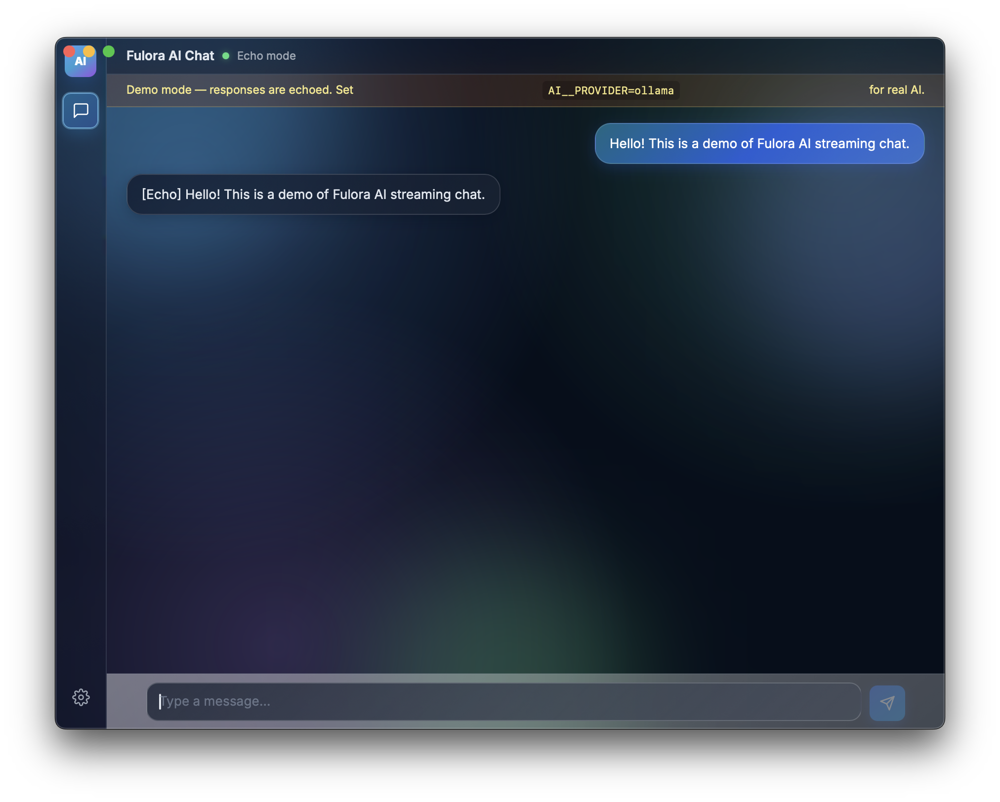
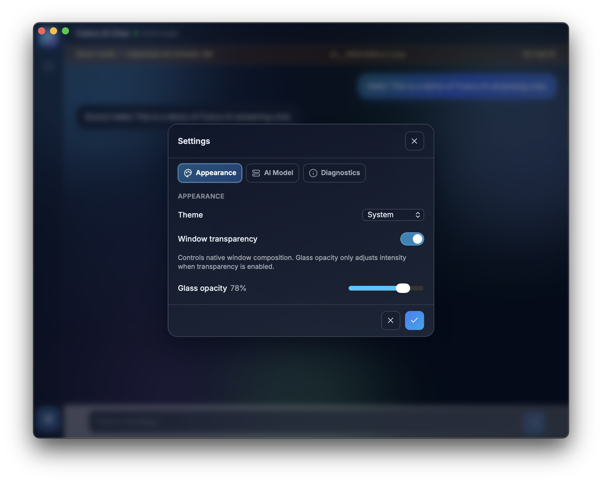

AI Chat Demo & Integration Guide
Build AI-powered hybrid desktop apps with Fulora — combining Avalonia's native shell with a modern React frontend, IAsyncEnumerable<T> streaming, and Microsoft.Extensions.AI.
Source code:
samples/avalonia-ai-chat/
What You'll Build
A native desktop chat app that streams AI responses token-by-token — with glass transparency, theme switching, and custom drag regions — all driven from a React frontend through Fulora's type-safe bridge.
Chat Interface

A dark-themed native Avalonia window with a React frontend loaded inside a WebView. Left sidebar navigation, bottom chat input, real-time streaming — all communicating through the type-safe C# ↔ JavaScript bridge.
Streaming Conversation

Messages are streamed token-by-token using IAsyncEnumerable<T>. User messages appear as blue bubbles, AI responses stream in real-time. In echo mode (no backend required), the prompt is echoed back for demonstration.
Appearance Settings

The settings panel exposes the framework's IWindowShellService capabilities: theme switching (System / Liquid / Classic), native window transparency (Mica, Acrylic, Blur), and glass opacity control (20–95%) — all applied globally via updateWindowShellSettings().
Architecture
┌──────────────────────────────────────────────────┐
│ React UI (AvaloniAiChat.Web) │
│ ┌────────────────────────────────────────┐ │
│ │ for await (const token of │ │
│ │ AiChatService.streamCompletion(p)) │ │
│ └──────────────┬─────────────────────────┘ │
└─────────────────┼────────────────────────────────┘
│ JSON-RPC + AsyncIterable bridge
┌─────────────────┼────────────────────────────────┐
│ Bridge Layer (AvaloniAiChat.Bridge) │
│ ┌──────────────┴─────────────────────────┐ │
│ │ [JsExport] IAiChatService │ │
│ │ StreamCompletion(prompt, ct) │ │
│ │ → IAsyncEnumerable<string> │ │
│ └──────────────┬─────────────────────────┘ │
└─────────────────┼────────────────────────────────┘
│ C# implementation
┌─────────────────┼────────────────────────────────┐
│ Desktop Host (AvaloniAiChat.Desktop) │
│ ┌──────────────┴─────────────────────────┐ │
│ │ AiChatService : IAiChatService │ │
│ │ wraps IChatClient from │ │
│ │ Microsoft.Extensions.AI │ │
│ └──────────────┬─────────────────────────┘ │
│ ┌──────────────┴─────────────────────────┐ │
│ │ IWindowShellService (framework) │ │
│ │ WindowShellService + ChromeProvider │ │
│ │ → theme, transparency, drag regions │ │
│ └────────────────────────────────────────┘ │
└─────────────────┼────────────────────────────────┘
│
┌───────┴───────┐
│ IChatClient │ Ollama / OpenAI / Echo
└───────────────┘
Streaming Patterns
C# Side — IAsyncEnumerable<T>
Mark your bridge method with IAsyncEnumerable<T> return type. The source generator maps it to the JSON-RPC streaming protocol automatically:
[JsExport]
public interface IAiChatService
{
IAsyncEnumerable<string> StreamCompletion(
string prompt,
CancellationToken cancellationToken = default);
}
The implementation wraps any IChatClient:
public sealed class AiChatService(IChatClient chatClient) : IAiChatService
{
public async IAsyncEnumerable<string> StreamCompletion(
string prompt,
[EnumeratorCancellation] CancellationToken ct = default)
{
ChatMessage[] messages = [new(ChatRole.User, prompt)];
await foreach (var update in chatClient
.GetStreamingResponseAsync(messages, cancellationToken: ct))
{
if (update.Text is { Length: > 0 } text)
yield return text;
}
}
}
JavaScript Side — AsyncIterable
The bridge maps IAsyncEnumerable<T> to a JS AsyncIterable. Use for await...of:
const iterable = AiChatService.streamCompletion(prompt);
for await (const token of iterable) {
appendToMessage(token);
}
Window Shell Service
The framework provides IWindowShellService for unified window appearance management. The desktop host initializes it with just a few lines:
var chromeProvider = new AvaloniaWindowChromeProvider();
chromeProvider.TrackWindow(this, new WindowChromeTrackingOptions
{
CustomChrome = true,
DragRegionHeight = 28
});
var themeProvider = new AvaloniaThemeProvider();
var shellService = new WindowShellService(chromeProvider, themeProvider);
WebView.Bridge.Expose<IWindowShellService>(shellService);
The web frontend can then control theme, transparency, and read chrome metrics via RPC:
// Get current state
const state = await WindowShellService.getWindowShellState();
// Update settings
await WindowShellService.updateWindowShellSettings({
themePreference: 'system',
enableTransparency: true,
glassOpacityPercent: 78
});
// Stream state changes (theme, transparency, metrics)
for await (const state of WindowShellService.streamWindowShellState()) {
applyTheme(state.effectiveThemeMode);
}
Cancellation
From JavaScript
Use AbortController to cancel a streaming operation:
const controller = new AbortController();
const iterable = AiChatService.streamCompletion(prompt, controller.signal);
// Later: cancel
controller.abort();
The bridge maps AbortSignal → CancellationToken on the C# side.
Inactivity Timeout
Enumerators that are not polled for 30 seconds are automatically disposed by the runtime. This prevents resource leaks from abandoned streams.
Backend Configuration
The sample selects an AI backend via environment variables:
| Variable | Value | Backend |
|---|---|---|
AI__PROVIDER |
echo |
Echo mode (streams prompt back) |
AI__PROVIDER |
ollama |
Local Ollama instance |
| (not set) | — | Default: Ollama at localhost:11434 |
Echo Mode (No Backend Required)
AI__PROVIDER=echo dotnet run --project samples/avalonia-ai-chat/AvaloniAiChat.Desktop
Echo mode streams the user's prompt back character by character. A banner in the UI indicates demo mode. This is the easiest way to try the sample without any AI backend.
Ollama Setup
- Install Ollama: https://ollama.com/download
- Pull a model:
ollama pull qwen2.5:3b - Run the sample:
cd samples/avalonia-ai-chat
dotnet run --project AvaloniAiChat.Desktop
Running the Demo
Prerequisites
- .NET 10 SDK
- Node.js 18+
Steps
# 1. Install frontend dependencies
cd samples/avalonia-ai-chat/AvaloniAiChat.Web
npm install
# 2. Start the Vite dev server (HMR enabled)
npm run dev
# 3. In another terminal, run the desktop app (echo mode)
AI__PROVIDER=echo dotnet run --project AvaloniAiChat.Desktop
The app opens a native Avalonia window with the React SPA loaded inside the WebView, with full bridge connectivity, glass transparency, and custom chrome drag regions — all managed by the framework.
Project Structure
samples/avalonia-ai-chat/
├── AvaloniAiChat.Bridge/ # Shared bridge contracts
│ └── Services/
│ ├── IAiChatService.cs # [JsExport] AI chat streaming interface
│ └── IAppearanceService.cs # Sample-specific DTOs (optional)
├── AvaloniAiChat.Desktop/ # Avalonia desktop host
│ ├── MainWindow.axaml # WebView control layout
│ ├── MainWindow.axaml.cs # Service wiring (5 lines for shell service)
│ └── AiChatService.cs # IChatClient wrapper
└── AvaloniAiChat.Web/ # React frontend (Vite + TypeScript)
└── src/
└── App.tsx # Chat UI, settings panel, theme handling
Key Capabilities
| Capability | How It Works | Bridge Direction |
|---|---|---|
| AI streaming | IAsyncEnumerable<string> → AsyncIterable |
C# → JS |
| Cancellation | AbortSignal → CancellationToken |
JS → C# |
| Theme control | IWindowShellService.updateWindowShellSettings() |
JS → C# |
| Transparency | WindowShellService + AvaloniaWindowChromeProvider |
Bidirectional |
| Custom drag region | PointerPressed tunnel handler with interactive exclusion |
Host-managed |
| State streaming | IWindowShellService.streamWindowShellState() |
C# → JS |